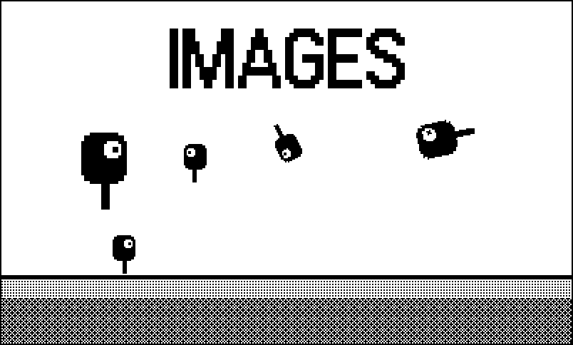
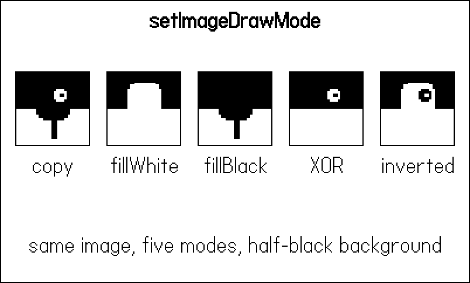
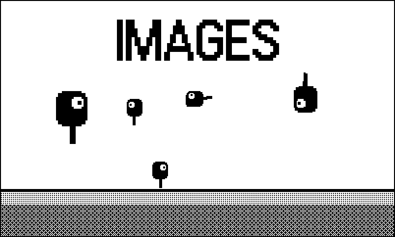

5 Images, Imagetables, and Fonts
Chapter 4 drew straight onto the screen, one primitive at a time. That is fine when a shape costs a handful of calls, but a detailed creature redrawn from thirty primitives every frame is money spent thirty times on the same picture. The fix is the playdate.graphics.image: draw the picture once, keep it, and stamp it wherever you need it. Images are also the unit of animation (imagetables), of text effects (a string rendered to an image scales; a string on its own does not), and of whole pre-rendered worlds (1).
This chapter’s example, 05-images, ships with no image files at all. Every asset — a four-frame walking robot, a three-tile terrain set, a scalable title — is generated in code at boot by drawing into offscreen images with pushContext. That is the house specialty across the case-study games: Blood and Whine and Fightin’ Chitin have zero bitmap assets between them. You will still learn the loading path (most games use both), but generating your first assets teaches the image APIs faster than any PNG can, and it keeps this book’s examples self-contained.
5.1 Two ways to make an image
gfx.image.new has two personalities, distinguished by their arguments:
local img = gfx.image.new("images/hero") -- load from the pdx
local img = gfx.image.new(32, 32) -- blank 32x32The load form takes a path relative to the bundle root, no extension: pdc compiles source/images/hero.png into images/hero.pdi, and this call finds it. It returns nil plus an error string if the file is missing — worth an assert in development, because a nil image fails later and further from the cause.
The size form makes a blank image, transparent by default; an optional third argument (gfx.kColorWhite, kColorBlack, kColorClear) pre-fills it. A blank image is a canvas, and that is where pushContext comes in.
5.2 Drawing into an image: pushContext
gfx.pushContext(img) reroutes every drawing call — all of Chapter 4, primitives, dithers, text — into img instead of the screen, until the matching gfx.popContext(). Here is the example’s walker being built, one frame per leg phase:
local function walkerFrame(phase)
local img = gfx.image.new(32, 32) -- transparent
gfx.pushContext(img) -- draws now hit img
gfx.setColor(gfx.kColorBlack)
-- legs: two lines swinging in opposite phase
local swing = math.sin(phase) * 7
gfx.setLineWidth(3)
gfx.drawLine(16, 20, 16 - swing, 31)
gfx.drawLine(16, 20, 16 + swing, 31)
gfx.setLineWidth(1)
-- body and eye
gfx.fillRoundRect(8, 4, 16, 18, 4)
gfx.setColor(gfx.kColorWhite)
gfx.fillCircleAtPoint(19, 10, 3)
gfx.setColor(gfx.kColorBlack)
gfx.fillCircleAtPoint(20, 10, 1)
gfx.popContext() -- back to the screen
return img
end
function Gen.walker()
local table = gfx.imagetable.new(4) -- empty, 4 slots
for i = 1, 4 do
local phase = (i - 1) / 4 * 2 * math.pi
table:setImage(i, walkerFrame(phase))
end
return table
endEverything between push and pop is ordinary Chapter 4 drawing; the only new idea is that the “screen” is 32 pixels wide and belongs to us. Draw state (color, dither, draw mode) is part of the pushed context, so leaks are contained — one more reason the procedural-asset games love this pattern.
Every pushContext needs exactly one popContext, on every code path — an early return between them leaves all subsequent drawing silently rerouted into your image, and the screen goes dark or stale. If a generator function can bail, pop before the return. The symptom (“the game froze but the music kept going”) looks nothing like the cause.
The same trick generates terrain tiles — note the tiles use gray-style dither fills from Chapter 4, so the terrain inherits the book’s palette:
local function tile(fn)
local img = gfx.image.new(16, 16, gfx.kColorWhite)
gfx.pushContext(img)
fn()
gfx.popContext()
return img
end
function Gen.tiles()
local t = gfx.imagetable.new(3)
t:setImage(1, tile(function() end)) -- sky: white
t:setImage(2, tile(function() -- grass
gfx.setDitherPattern(0.75,
gfx.image.kDitherTypeBayer4x4)
gfx.fillRect(0, 0, 16, 16)
gfx.setColor(gfx.kColorBlack)
gfx.fillRect(0, 0, 16, 3)
end))
t:setImage(3, tile(function() -- dirt
gfx.setDitherPattern(0.4,
gfx.image.kDitherTypeBayer8x8)
gfx.fillRect(0, 0, 16, 16)
end))
return t
endThe Tiles engine (tiles/core/tmap.lua:32) defines every tile type as a pattern fill plus a 16×16 grid of characters — # for black, o for white, . for skip — rendered to an image once, at definition time, inside a pushContext. Sixteen strings of sixteen characters in the source file are the artwork. Four games shipped on that tileset without a drawing tool ever being opened.
5.3 Stamping: draw, flips, scaled, rotated
Once you have an image, img:draw(x, y) stamps its top-left corner at (x, y). The variants:
img:draw(x, y, flip)— the third argument mirrors the stamp:gfx.kImageUnflipped,kImageFlippedX,kImageFlippedY,kImageFlippedXY. A walker facing both directions is one imagetable plus a flip flag, not two tables.img:drawCentered(x, y)andimg:drawAnchored(x, y, ax, ay)place the image by its center or by a fractional anchor — handy when a sprite’s “position” is its feet.img:drawIgnoringOffset(x, y)bypasses the camera offset- for HUD elements.
img:drawScaled(x, y, scale, [yscale])andimg:drawRotated(x, y, angle, [scale])resample the image on the way out.drawRotateddraws centered on (x, y) — unlike plaindraw— which surprises everyone once.
The example’s main scene exercises all of them: the animated walker crosses a tilemap floor while stamped copies hang in the sky — one doubled, one spinning, one mirrored, and a title image at 3× scale:
local function scene()
gfx.clear(gfx.kColorWhite)
tilemap:draw(0, 192) -- one call, 75 tiles
-- the animation loop picks the frame; we place it
walkerX = walkerX + 2
if walkerX > 400 then walkerX = -32 end
walkLoop:draw(walkerX, 160)
-- the same frame stamped scaled and rotated
local tw = titleImg:getSize()
titleImg:drawScaled(200 - tw * 1.5, 16, 3)
stampImg:drawScaled(40, 84, 2)
stampImg:drawRotated(200, 100, frame * 3)
stampImg:drawRotated(310, 96, -frame * 2, 1.5)
stampImg:draw(120, 96, gfx.kImageFlippedX)
end
drawScaled and drawRotated resample every pixel, every call, every frame — a rotated stamp can cost an order of magnitude more than a plain draw. Fine for a few stamps; ruinous for a field of them. If an image rotates to a fixed set of angles (compass facings, clock hands), pre-render the rotations into an imagetable at boot — pay once, stamp cheap forever. The same goes for scaled text: render once into an image at final size, then draw it.
5.4 Imagetables and the animation loop
An imagetable is an ordered collection of same-size images. From disk, gfx.imagetable.new("images/walker") loads a sequence exported as walker-table-32-32.png; frames are indexed from 1 via table:getImage(i), and table:getLength() counts them. Built in code, the constructor takes a frame count — gfx.imagetable.new(4) — and table:setImage(i, img) fills the slots, which is exactly what Gen.walker did above.
You could animate by indexing frames off your own clock. CoreLibs ships the standard shortcut:
import "CoreLibs/animation"
local loop = gfx.animation.loop.new(100, walkerTable, true)
-- later, every frame:
loop:draw(x, y)gfx.animation.loop.new(frameTime, imagetable, shouldLoop) advances on wall-clock milliseconds (here 100 ms a frame), not on update calls, so animation speed survives frame drops. The loop’s :draw(x, y) stamps the current frame; loop.frame is readable and writable; for one-shot animations pass false and poll loop:isValid(), which goes false when the last frame has shown. The example wires it up in half a dozen lines:
local walkerTable = Gen.walker()
local walkLoop = gfx.animation.loop.new(100, walkerTable, true)
local titleImg = Gen.title("*IMAGES*")
local stampImg = walkerTable:getImage(1)
local tilemap = gfx.tilemap.new()
tilemap:setImageTable(Gen.tiles())
tilemap:setSize(25, 3)
for x = 1, 25 do
tilemap:setTileAtPosition(x, 1, 2) -- grass row
tilemap:setTileAtPosition(x, 2, 3) -- dirt rows
tilemap:setTileAtPosition(x, 3, 3)
endComparing Figure 5.1 and Figure 5.2: the walker’s legs have swapped phase and it has moved on — the loop picked the frame, our code only chose where to stamp it.
5.5 Draw modes: one image, many inkings
Chapter 4 introduced kDrawModeFillWhite for knockout text. The full set applies to every image stamp, and the example’s gallery screen (B toggles it) draws the same walker frame under five modes, each cell half black so you can see both behaviors:
local MODES <const> = {
{ "copy", gfx.kDrawModeCopy },
{ "fillWhite", gfx.kDrawModeFillWhite },
{ "fillBlack", gfx.kDrawModeFillBlack },
{ "XOR", gfx.kDrawModeXOR },
{ "inverted", gfx.kDrawModeInverted },
}
local function modesGallery()
gfx.clear(gfx.kColorWhite)
gfx.drawTextAligned("*setImageDrawMode*", 200, 8,
kTextAlignment.center)
for i, m in ipairs(MODES) do
local x = 12 + (i - 1) * 78
-- half the cell is black so both halves are visible
gfx.setColor(gfx.kColorBlack)
gfx.fillRect(x, 60, 64, 32)
gfx.drawRect(x, 60, 64, 64)
gfx.setImageDrawMode(m[2])
stampImg:drawScaled(x + 4, 62, 1.8)
gfx.setImageDrawMode(gfx.kDrawModeCopy)
gfx.drawTextAligned(m[1], x + 32, 132,
kTextAlignment.center)
end
gfx.drawTextAligned(
"same image, five modes, half-black background",
200, 200, kTextAlignment.center)
end
The catalog, all values of gfx.setImageDrawMode:
| Mode | Effect on opaque pixels |
|---|---|
kDrawModeCopy |
drawn as-is (default) |
kDrawModeFillWhite |
all drawn white |
kDrawModeFillBlack |
all drawn black |
kDrawModeXOR |
white where image and destination differ |
kDrawModeNXOR |
white where they match |
kDrawModeInverted |
image colors swapped |
kDrawModeWhiteTransparent |
white pixels skipped |
kDrawModeBlackTransparent |
black pixels skipped |
Transparent pixels are never drawn in any mode. FillWhite and FillBlack earn their keep instantly — a hit-flash is one frame of your enemy drawn FillWhite, no second asset needed. WhiteTransparent rescues loaded art whose background baked in as white. And as in Chapter 4: reset to kDrawModeCopy when you are done; the mode applies to all subsequent images and text.
5.6 Text as images, and fonts
The system font comes in three variants — gfx.getSystemFont(), plus playdate.graphics.font.kVariantBold and kVariantItalic as arguments to it — and you have already used the inline markup (*bold*, _italic_). Custom fonts are .fnt files: local f = gfx.font.new("fonts/pixel"), then gfx.setFont(f), or f:drawText(str, x, y) directly. f:getHeight() and f:getTextWidth(str) do the measuring.
What no font will do is scale — glyphs are bitmaps with one size. The idiom, used by the example’s title and by nearly every case-study title screen, is text-into-image:
function Gen.title(text)
local w, h = gfx.getTextSize(text)
local img = gfx.image.new(w, h)
gfx.pushContext(img)
gfx.drawText(text, 0, 0)
gfx.popContext()
return img
endMolt caches exactly this — note the image is built lazily, once, then stamped scaled every frame thereafter:
-- molt/source/draw.lua:324
if not titleImg then
local w, h = gfx.getTextSize("*MOLT*")
titleImg = gfx.image.new(w, h)
gfx.pushContext(titleImg)
gfx.drawText("*MOLT*", 0, 0)
gfx.popContext()
end
gfx.setImageDrawMode(gfx.kDrawModeFillWhite)
local tw = titleImg:getSize()
titleImg:drawScaled(C.W / 2 - tw * 3 / 2, 42, 3)Scaled bitmap text goes blocky, of course — 3× is chunky by design. When Phosphor’s vector games needed titles at any size with clean strokes, they skipped fonts entirely and shipped a stroke font: every glyph a set of polylines on a 4×6 grid, drawn with drawLine at whatever height the screen calls for:
-- phosphor/vec/beams.lua:1
-- Phosphor core: a vector stroke font, so HUDs and titles are
-- real beam lines like the cabinets drew — scalable and
-- weightable, no raster font.
--
-- Glyphs live on a 4x6 grid, each as one or more polylines
-- ("x,y x,y ..." strings, parsed once at load). Beams.print
-- draws at any pixel height.
local DEFS <const> = {
A = { "0,6 0,2 2,0 4,2 4,6", "0,4 4,4" },
B = { "0,0 0,6", "0,0 3,0 4,1 4,2 3,3 0,3", ... },Forty glyph definitions replaced every font asset in twelve games — an extreme point on the same procedural-asset spectrum this chapter has been walking.
The system font lacks more characters than you might expect — the middle dot · and em dash — among them — and they render as hollow error boxes, not blanks. The circled button glyphs Ⓐ and Ⓑ are present and are the conventional way to write control hints. Test any punctuation you care about.
5.7 Tilemaps: many stamps, one object
When the same small set of images tiles a grid — terrain, dungeon floors — gfx.tilemap packages the whole arrangement as one drawable object:
local tilemap = gfx.tilemap.new()
tilemap:setImageTable(Gen.tiles())
tilemap:setSize(25, 3)
tilemap:setTileAtPosition(x, y, index) -- 1-based cells
tilemap:draw(0, 192)The example’s ground strip is 75 cells drawn by a single tilemap:draw call — visible along the bottom of Figure 5.1. getTileAtPosition reads cells back, so a tilemap can double as the collision grid’s visual layer. Against making your own loop over imagetable:drawImage, the tilemap wins on tidiness at small sizes and performance at large ones — though 1 shows the case-study games’ preferred alternative for truly static terrain: render the whole map into one big image once, and stamp that.

5.8 What you know now
gfx.image.new(path)loads compiled assets;gfx.image.new(w, h)makes a canvas;pushContext(img)/popContext()turns all of Chapter 4 into an asset generator — balance them on every code path.- Stamping:
draw(with flips),drawCentered/drawAnchored,drawScaled,drawRotated(centered!) — and that scaling and rotation are per-call resampling costs to pre-render away when hot. - Imagetables hold frames;
gfx.animation.loopadvances them on wall-clock time andloop:drawstamps the current one. - The eight image draw modes, with
FillWhite/FillBlackas free recolors and a mandatory reset toCopy. - Fonts have one size; scalable text is text drawn into an image (Molt’s cached title), and the fully procedural endpoint is a stroke font (Phosphor’s beams).
gfx.tilemapdraws a whole grid of imagetable cells as one object.
Next, Chapter 6 covers the SDK’s sprite system — the retained-mode alternative to everything these last two chapters did by hand — and is honest about why the case-study games chose the hand.